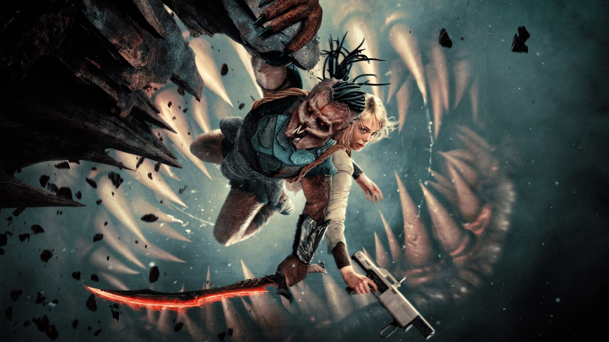

Predator: Badlands
Dan Trachtenberg mette il cacciatore al centro della storia: un'avventura più calda e più ironica della saga, con Elle Fanning a rubare la scena
Per quasi quarant'anni il Predator è stato il mostro: l'ombra nella giungla, il trofeo in cerca di teschi. Dan Trachtenberg, dopo Prey, fa la mossa più semplice e più rischiosa: gli dà un nome, un'infanzia difficile e un compagno di viaggio che parla troppo. Predator: Badlands, uscito in Italia il 6 novembre 2025, è un film che sposta la macchina da presa dalla parte del cacciatore, e quasi sempre è la scelta giusta.
Di che cosa parla
Dek è un giovane Yautja, la specie dei Predator, che il suo clan considera troppo debole: il più piccolo, quello da scartare. Per dimostrare il proprio valore sceglie di cacciare la preda più pericolosa che esista, e finisce su un pianeta dove tutto, dalle piante agli animali, sembra fatto per ucciderlo. Lì incontra Thia, un'androide della Weyland-Yutani danneggiata, interpretata da Elle Fanning, che si offre di guidarlo. L'obiettivo è una creatura chiamata Kalisk.
La premessa è lineare e il film la rispetta: una caccia, due compagni che non si capiscono, un mondo da attraversare. Non ci sono colpi di scena da proteggere, e la durata di 107 minuti lo dimostra, perché Trachtenberg parte subito.
Un Predator che ci si affeziona a guardare
La scelta più coraggiosa è di racconto prima ancora che di azione. Dek è interpretato da Dimitrius Schuster-Koloamatangi, uno stuntman, con un costume e un'animazione facciale ottenuta dai suoi movimenti, e il risultato regge: ha il corpo di un cacciatore e le esitazioni di un ragazzo. The Spool, che pure trova i volti digitali dei Predator meno convincenti, lo giudica uno degli interpreti più riusciti del film. Su questo punto concordiamo: nelle scene in cui Dek non sa cosa fare, il film è più interessante che nei combattimenti.
In parte è anche un film sul linguaggio. Per la lingua dei Predator è stato coinvolto il linguista Britton Watkins, e si nota: le poche battute dei Yautja suonano come una cultura, non come ringhi sottotitolati.
Elle Fanning e il tono
Fanning ha un doppio ruolo, Thia e Tessa, e porta nel film il registro che mancava alla saga: l'umorismo. La sua androide parla, commenta, tenta di convincere, e ogni scambio con un Dek taciturno funziona perché i due hanno bisogni opposti. La critica italiana di DassCinemag parla di un film più vicino a Guardiani della Galassia che all'originale del 1987, e per tono ci sembra una definizione corretta: meno tensione da thriller, più avventura con un cuore.
Questo è anche il limite. Chi ama la saga per la minaccia silenziosa di Prey troverà qui un film più gentile, che ha rinunciato a farci temere il cacciatore. Che sia un difetto dipende da cosa si cerca, ma va detto: è il Predator più amichevole che si sia visto, e il primo della serie principale con classificazione PG-13, cioè senza il livello di violenza degli altri.

Il posto nella saga
Badlands è il settimo capitolo della serie, annunciato nel febbraio 2024 e scritto da Trachtenberg insieme a Patrick Aison. Il confronto con quel film del 2022 è inevitabile e, per noi, istruttivo: Prey funzionava perché toglieva tutto e lasciava una cacciatrice, un bosco e un mostro; Badlands aggiunge, e va nella direzione opposta, quella del racconto di mondo. Sono due modi di rinnovare un marchio, e il bello è che il regista li pratica entrambi senza ripetersi. Anche il pubblico gli ha dato ragione: il Popcornmeter di Rotten Tomatoes segna il 94%.
Un pianeta da esplorare
Il film è stato girato in Nuova Zelanda, da fine agosto a ottobre 2024, con il titolo di lavorazione Backpack. Il pianeta Genna, tra vegetazione assassina e creature enormi, è la parte più generosa della messa in scena: ogni ambiente ha una regola e una minaccia sua. La musica di Sarah Schachner e Benjamin Wallfisch, entrambi già al fianco di Trachtenberg in lavori precedenti della saga, accompagna senza sovrastare.
Per la prima volta il Predator ha qualcosa da perdere, e il film comincia a funzionare davvero da lì.
Cosa non funziona
The Spool lamenta due cose che condividiamo. Gli effetti digitali sui volti dei Predator tolgono intimità proprio nei momenti più delicati. E il film sostiene che la realizzazione di sé passi oltre la violenza mentre ci regala combattimenti da celebrare: una contraddizione che Trachtenberg non scioglie. Non è poi un film innovativo come Prey: rispetta le regole più di quanto le riscriva.
L'accoglienza e il successo
La critica lo ha accolto bene: l'86% di giudizi positivi su 277 recensioni su Rotten Tomatoes, 71 su 100 su Metacritic, e una A- di CinemaScore, la più alta della saga. Negli Stati Uniti ha debuttato con 40 milioni di dollari, un record per la serie. Con un budget di 105 milioni, secondo Wikipedia a ottobre 2026 ha incassato nel mondo 184,6 milioni di dollari: un risultato discreto più che travolgente, ma sufficiente a tenere aperta la porta di un seguito, che Trachtenberg ha detto di voler dirigere se il film avesse funzionato.
Dove vedere Predator: Badlands
Dopo l'uscita in sala il film è arrivato in streaming su Disney+. In Italia, secondo TMDB, è disponibile in abbonamento sulla piattaforma e anche a noleggio su Apple TV, Timvision, Rakuten TV e Amazon Video.
Se da un lato Badlands rinuncia alla paura che ha reso grande Prey, dall'altro dà alla saga un protagonista, un tono nuovo e una Elle Fanning in gran forma. Lo consigliamo a chi ama l'avventura fantascientifica e ha voglia di vedere il cacciatore dall'altra parte; chi cerca il terrore dell'originale resterà con la sensazione di un film troppo educato.
Domande frequenti
Dove vedere Predator: Badlands in streaming?
In Italia il film risulta disponibile in abbonamento su Disney+, secondo la scheda TMDB consultata a ottobre 2026.
Quando è uscito Predator: Badlands in Italia?
Nelle sale italiane il 6 novembre 2025, un giorno prima degli Stati Uniti, dove è arrivato il 7 novembre.
Bisogna aver visto gli altri film della saga?
No: la storia è autonoma e racconta un nuovo personaggio su un pianeta nuovo. Conoscere Prey aiuta a cogliere il percorso di Trachtenberg, ma non è necessario.